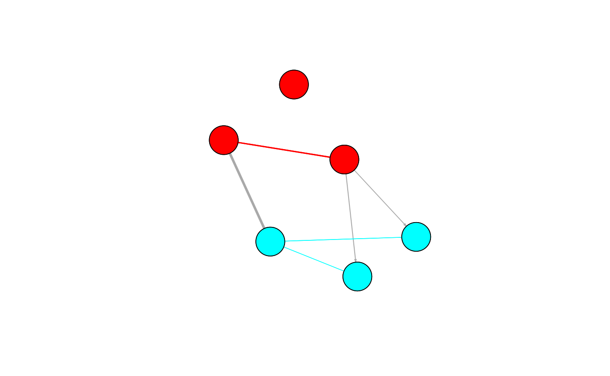

This package allows for Gaussian, Logistic and Poisson regression with l1 or l2 penalty. And it can also do fitting and visualizing mixed graphical models.
## regressions X <- matrix(rnorm(10 * 50), 10, 50) y <- rnorm(10) glmLasso(X, y, lambda = 0.5, family = "gaussian", support_stability = 10)#> $Coef #> [,1] #> (Intercept) 0.15629420 #> v1 0.19321508 #> v2 0.00000000 #> v3 0.00000000 #> v4 0.00000000 #> v5 0.00000000 #> v6 0.00000000 #> v7 0.00000000 #> v8 0.00000000 #> v9 0.00000000 #> v10 0.00000000 #> v11 0.00000000 #> v12 0.00000000 #> v13 0.00000000 #> v14 0.00000000 #> v15 0.00000000 #> v16 0.00000000 #> v17 0.00000000 #> v18 0.00000000 #> v19 0.00000000 #> v20 0.00000000 #> v21 0.00000000 #> v22 0.00000000 #> v23 0.00000000 #> v24 0.00000000 #> v25 0.00000000 #> v26 0.00000000 #> v27 0.00000000 #> v28 0.00000000 #> v29 0.00000000 #> v30 0.00000000 #> v31 0.00000000 #> v32 -0.03244359 #> v33 0.00000000 #> v34 0.00000000 #> v35 0.00000000 #> v36 0.00000000 #> v37 0.00000000 #> v38 0.00000000 #> v39 0.00000000 #> v40 0.00000000 #> v41 0.00000000 #> v42 0.00000000 #> v43 0.00000000 #> v44 0.00000000 #> v45 0.00000000 #> v46 0.00000000 #> v47 0.00000000 #> v48 0.00000000 #> v49 0.00000000 #> v50 0.00000000 #>#> $Coef #> [,1] #> (Intercept) 0.154833686 #> v1 0.143899201 #> v2 0.068139250 #> v3 0.003270413 #> v4 0.019839950 #> v5 0.051049527 #> v6 0.042242864 #> v7 0.029839794 #> v8 0.006610126 #> v9 -0.017951012 #> v10 -0.057385393 #> v11 0.043266154 #> v12 0.025332849 #> v13 -0.033240125 #> v14 -0.001300640 #> v15 -0.027951263 #> v16 0.102459583 #> v17 -0.053749329 #> v18 -0.026374998 #> v19 -0.027111584 #> v20 -0.002631114 #> v21 0.020762640 #> v22 0.045095621 #> v23 -0.027486885 #> v24 -0.001109021 #> v25 -0.015240762 #> v26 0.080959019 #> v27 0.027883094 #> v28 -0.036548396 #> v29 0.025453866 #> v30 -0.011446391 #> v31 0.014010701 #> v32 -0.110409151 #> v33 -0.016069232 #> v34 0.001268198 #> v35 -0.053924697 #> v36 0.070542874 #> v37 -0.008490446 #> v38 0.054554106 #> v39 0.026627567 #> v40 0.023569982 #> v41 0.012806707 #> v42 0.006157437 #> v43 0.002598585 #> v44 0.001624954 #> v45 -0.086349456 #> v46 0.007722239 #> v47 0.016540667 #> v48 -0.032892980 #> v49 0.095891570 #> v50 0.051738818 #>## BRAIL X <- lapply(1:2, function(x) {matrix(rnorm(5 * 10), 5, 10)}) y <- rnorm(5) BRAIL(X, y, family = "gaussian", tau = 0.8, B = 20, doPar = TRUE)#> $coefficients #> $coefficients[[1]] #> [1] 0.0000000 0.0000000 0.0000000 0.0000000 0.0000000 0.0000000 #> [7] 0.0000000 0.0000000 -0.6189833 0.0000000 #> #> $coefficients[[2]] #> [1] 0.0000000 0.0000000 0.0000000 0.0000000 0.0000000 0.0000000 #> [7] 0.0000000 -0.1057954 0.0000000 0.0000000 #> #> #> $scores #> $scores[[1]] #> [1] 0.25 0.70 0.05 0.20 0.00 0.00 0.00 0.00 0.85 0.05 #> #> $scores[[2]] #> [1] 0.00 0.30 0.00 0.65 0.60 0.25 0.70 0.95 0.25 0.55 #> #>## MixedGraph fitting and plotting X <- lapply(1 : 2, function(x){matrix(rnorm(12), nrow = 4)}) crf_structure = matrix(c(1, 0, 1, 1), 2, 2) brail_control <- list(B = 5, tau = 0.6) G <- MixedGraph(X, crf_structure, brail_control = brail_control) plot(G, method = "igraph", weighted = TRUE)